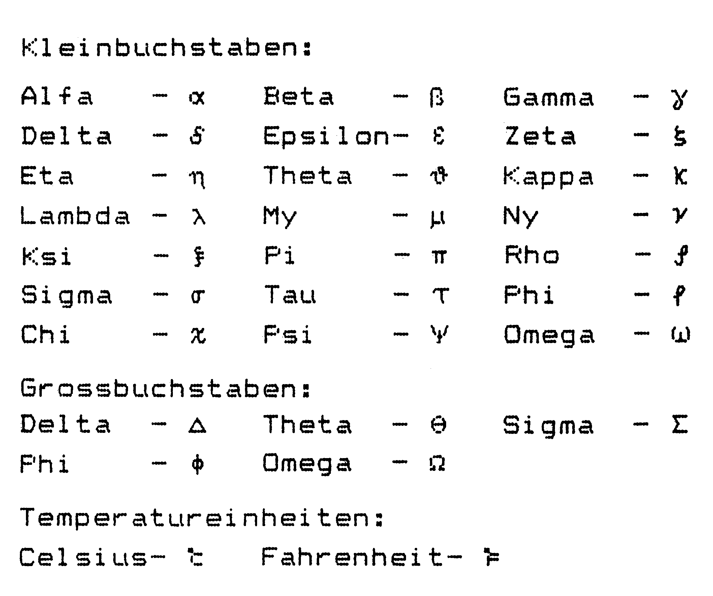

Tips und Tricks zu Vizawrite (Teil 7)
In dieser Folge soll wieder die Vielfalt der Tips und Tricks im Vordergrund stehen. So werden unter anderem Besitzer von Commodore-Druckern (und Kompatiblen), dem SG-10 von Star sowie der Gabriele 9009-Typenradschreibmaschine und viele »eingeschworene« Vizawrite-Benutzer auf ihre Kosten kommen.
Anregungen zu ZVIZA
Das in Ausgabe 5/86 vorgestellte Programm »ZVIZA« reizte anscheinend nicht nur die Besitzer der englischen Vizawrite-Version. Es bedarf im Grunde keiner Änderungen des Programmes, um es auf die deutsche Version anzuwenden. Man muß lediglich berücksichtigen, daß die deutsche Version einige Zeichen auf Tasten legt, die nicht den üblichen Belegungen entsprechen und im folgenden aufgeführt sind:
| Bildschirmzeichen | Tasten-Code |
|---|---|
| ä | 101 |
| Ä | 121 |
| ö | 118 |
| Ö | 122 |
| ü | 120 |
| Ü | 123 |
| ß | 124 |
| § | 0 |
| Space | 96 |
| Shift/Space | 32 |
Weiterhin besteht problemlos die Möglichkeit, die Anpassung der Bildschirmzeichen durch »ZVIZA« auch auf die reversen Zeichen auszudehnen. Steht in der vorliegenden Programmversion der Cursor auf einem der neuen Zeichen, so erscheint in der Blinkphase immer das reverse alte Zeichen.
Um die Änderung optisch perfekt zu machen, muß für jedes geänderte Zeichen auch noch dessen reverses Gegenstück definiert werden.
Die Zieladresse dieses reversen Zeichens erhält man, indem man das High-Byte der normalen Zieladresse (in Ausgabe 5/86 beschrieben) um vier erhöht. Jedes der acht folgenden »Daten-Byte« wird durch not(byte) and 255 bestimmt.
Listing 1 besteht aus den Programmzeilen, die in die »ZVIZA«-Version aus Heft 5/86 eingefügt werden müssen, um auch die reversen Zeichen entsprechend anzupassen.
Anpassung der Gabriele 9009 an Vizawrite
In der vierten Folge der Software-Hilfe wurden die Anpassungsprobleme der Privileg Electronic 3000 von Triumph Adler mit Multi-Board-Interface beschrieben. Das Vertauschen der Groß/Kleinbuchstaben tritt ebenfalls bei der Typenradschreibmaschine Gabriele 9009 der Firma Triumph Adler in Verbindung mit dem Quelle-Interface auf.
Eine Anpassung läßt sich durch »Gabriele 9009« (Listing 2) erreichen. Dieses kurze Programm wird geladen, durch RUN gestartet und lädt automatisch Vizawrite 64 nach. Es empfiehlt sich deshalb, das Programm auf der Kopie Ihrer Vizawrite-Diskette abzulegen oder nach dem Laden dieses Programmes die Vizawrite-Diskette einzulegen.
Nochmal: Umlaute auf dem MPS 801
In Heft 4/86 wurde darauf eingegangen, wiedie Druckroutine für den MPS 801 aus der Ausgabe 2/86, Seite 75, auch mit Vizawrite zu verwenden ist, um sowohl Umlaute als auch »ß« drucken zu können.
Die dabei unter Punkt 2 angegebene Bereichswahl »5« hat sich jedoch nicht bewährt, da Probleme mit der Unterlänge bei »g« auftauchen und (wie aus einigen Leserzuschriften hervorgeht) bei Druckbeginn ein dünner Strich ausgegeben wird.
Dies kann vermieden werden, indem man den Bereich »2« ($C000) wählt.
Sofern Sie mit umfangreichen Texten arbeiten, ist dieser Bereich ohnehin günstiger, denn bei Bereich »5« stürzt Vizawrite bei der Druckausgabe ab, wenn zirka 8 KByte Text überschritten wird (Beginn des Textspeichers in Vizawrite bei etwa $7500). Dies liegt daran, daß das Programm durch den Text überschrieben wird. Sicherlich ist dies auch bei Bereich »2« der Fall, bis dahin sind allerdings noch etwa 19000 Zeichen frei. Will man also sehr lange Texte ausdrucken, muß man sie in mehrere Teile zerlegen (später durch die »Global«-Funktion wieder aneinanderhängen) und von Zeit zu Zeit durch »CBM« und »Space« den noch verbleibenden Textspeicherplatz überprüfen. Als Richtwert lassen sich etwa 70 Blocks große Texte noch bearbeiten.
(Peter Jünger/bj)Festlegung der Seitenzahl bei der Druckausgabe
In Ausgabe 4/86 wurde eine Möglichkeit vorgestellt, um die automatische Seitennumerierung beim Ausdrucken beliebig festzulegen. Der nun folgende Lösungsweg zeichnet sich durch seine Kürze aus:
- Der zu druckende Text wird abgespeichert.
- Durch »CBM« und »q« gefolgt von »Return« gelangt man ins Anfangsmenü zurück.
- Mit dem Menüpunkt »F3« (create new document) wird unter einem beliebigen Namen ein neuer Text vorbereitet (zur besseren Übersicht etwa »Dummy«).
- Dieser »leere Text« wird ausgedruckt.
- Im Druckermenü wird unter der Option »Global/Fill« ein »g«, unter »File« der Name des zu druckenden Textes und unter »Start Page« die erste Seitenzahl eingegeben.
Wird nun die Taste »Fl« gedrückt, so wird der Text von Diskette nachgeladen. Der Ausdruck beginnt nun nicht mehr mit eins, sondern der unter »Start Page« angegebenen Seitenzahl.
Der damals vorgeschlagene Lösungsweg hat gegenüber dem nun folgenden Vor- aber auch Nachteile.
Der Vorteil der Fassung aus Ausgabe 4/86 besteht darin, auch innerhalb der »Global«-Funktion mit diesem Trick arbeiten zu können. Dies bedeutet, daß Sie nach einmaliger Festlegung im Dokument den weiteren Ausdruck sich selbst überlassen können. Wollen Sie beispielsweise fünf Dokumente hintereinander ausdrucken und soll zwischen Text 2 und 3 ein Sprung bei der Seitennumerierung auftreten, so ist der damals vorgestellte Lösungsweg sicherlich effektiver.
Bei Vorgabe höherer Seitenzahlen im ersten Text einer »Global-Kette« (oder auch einem Einzeldokument) ist jedoch diese Version vorzuziehen. Entscheiden Sie selbst, welcher Weg für Sie der günstigere ist.
(Gerd Mölbert/bj)Griechisch für Vizawrite mit dem SG-10
Für naturwissenschaftliche Texte ist es notwendig, griechische Buchstaben ausdrucken zu können. Der SG-10 ermöglicht es, »benutzerdefinierte Zeichen« in seinem RAM-Speicher abzulegen. Bei Vizawrite besteht das Problem, daß die ASCII-Codes über 128 mit frei definierbaren Steuerzeichen nicht angesprochen werden können. Mit wenigen Ausnahmen sind die Zeichen der ASCII-Werte kleiner als 128 für eine Textverarbeitung notwendig.
Das hier vorgestellte Programm bietet die Möglichkeit, neben allen anderen Zeichen 26 griechische Buchstaben in die Texte zu integrieren.
Sicher kann man dieses Programm auch mit anderen Druckern verwenden, die über einen frei definierbaren Zeichensatz verfügen (zum Beispiel Epson-FX 80 und FX 85), wobei möglicherweise Anpassungen an den Drucker oder das verwendete Interface nötig sind.
Anwendungsbeschreibung
Das Programm »Gamma« (Listing 3) schreibt nach dessen Start mit »run« die sequentielle Datei »seq-gamma« (Bild 1) auf Diskette. Diese Datei wird im späteren Verlauf durch die Merge-Funktion in Vizawrite eingeladen. Das Programm »griech./parallel« (Listing 4) war ursprünglich konzipiert, die »benutzerdefinierten Sonderzeichen« über ein einfaches Parallelkabel in Verbindung mit einem Centronics-Treiberprogramm zum Drucker zu übertragen. Es läßt sich jedoch auch mit dem Star-Interface verwenden, wie später ausführlich beschrieben wird.

Zunächst wird bei der Beschreibung davon ausgegangen, daß Sie ein Parallelkabel verwenden:
1) Übertragung der griechischen Buchstaben in den RAM-Speicher des Druckers:
Zur Datenübertragung vom Computer zum Drucker ist aufgrund des Parallelkabels eine Software-Centronics-Schnittstelle notwendig. Vizawrite liefert diese (»C 64 parallel prg«) auf der Systemdiskette so mit, daß sie isoliert geladen werden kann.
Zuerst den Dip-Schalter 1.5 am SG-10 ausschalten (aktiviert benutzerdefinierbare Zeichen), danach Drucker und System einschalten und das Programm »C 64 parallel prg« der Vizawrite-Systemdiskette laden. Nun wird durch »SYS 50000« überprüft, ob die Schnittstelle aktiv ist. Zur Datenübertragung an den Drucker kann natürlich auch jedes andere Centronics-Treiberprogramm verwendet werden. Das Programm »griech./parallel« wird jetzt geladen und mit »RUN« gestartet. Nun muß man lediglich noch warten, bis sich der Direktmodus mit »READY« zurückmeldet.
Ab jetzt darf der Drucker natürlich auf keinen Fall mehr ausgeschaltet werden, weil dadurch die Daten im RAM wieder gelöscht würden!
2) Vizawrite und sequentielle Datei laden:
Als erstes wird Vizawrite geladen. Meldet sich das Hauptmenü, geht man über die Funktionstasten Fl oder F3 in den Textverarbeitungsmodus. Dort angelangt, begibt man sich sofort in die Work-Page. Nach dem Drücken der Commodore-Taste und »SHIFT/M« zum Nachladen von Texten oder sequentiellen Dateien, wird bei »Merge:« seq-gamma und bei »Page:« s und »Return« eingegeben.
3) Ausdrucken von griechischen Buchstaben
Wird im Text einer der Buchstaben benötigt, kopiert man einfach aus der Work-Page das Zeichen, das hinter dem entsprechenden Namen (zum Beispiel Eta) aufgeführt ist, in seinen Text und der gewünschte Buchstabe erscheint beim Ausdruck an der vorgesehenen Stelle.
Um das Programm »griech./parallel« mit einem Star-Interface betreiben zu können, muß lediglich Zeile 20 in Open 4,4,4 geändert werden, dies bewirkt das Einschalten des Linearkanals. Nachdem die Datenübertragung der Zeichen an den Drucker beendet ist, muß im Direktmodus zur Verriegelung des Linearkanals folgende Befehlssequenz eingegeben werden:
OPEN 4,4,24:PRINT#4
Die »24« im »Open«-Befehl bedeutet, daß die Sekundäradresse 4 verriegelt wird (durch Sekundäradresse + 20), »Close4« wird nicht gesendet.
Aufgrund der Verriegelung des Linearkanals des Star-Interfaces sind alle Steuerbefehle, die im Handbuch des Star SG-10 beschrieben sind, verwendbar. Gleiches gilt auch für die von Vizawrite zur Verfügung gestellten Druckfunktionen, wie etwa Unterstreichen.
Allgemeine Hinweise:
Die Buchstaben a, ß, und 7 lassen sich auch durch Tastendruck erzeugen, da sie sich unter den Zeichen #, $ und & verbergen.
Es ist leider mit benutzerdefinierten Zeichen keine NLQ-Schönschrift möglich!
Im Druckermenü muß bei Parallelbetrieb folgendes beachtet werden:
Betriebsart: parallel
Printer Type: E
Auto L/Feed: n
Betriebsart: Star-Interface
Printer Type: e
Auto L/Feed: n
Abschließend sei noch darauf hingewiesen, daß man durch Veränderung des Programmes »ZVIZA« aus Ausgabe 5/86 mit etwas Tüftelei ebenfalls die Bildschirmausgabe den griechischen Zeichen anpassen kann. Erfahrungen hierüber können Sie uns gerne zusenden. Auch Tips und Tricks sowie Fragen richten Sie bitte an »Markt & Technik Verlag AG, Redaktion 64'er, Software-Corner, Herrn Herbert Buckel, Hans-Pinsel-Str. 2, 8013 Haar bei München«.
(René Krause/bj)Am Ende dieses Beitrages möchte ich noch zwei Druckfehlerteufelchen aus Ausgabe 3/86 berichtigen:
Die damals in Bild 1 abgedruckte Zeile muß lauten:
7 print #1,chr$(i*16+j); " ";
Weiterhin muß es in der dritten Textspalte auf Seite 162 bei »Global/Fill:« »v« anstatt »f« heißen, da es sich schließlich um ein Vizawrite-File handelt, welches zum Dateneinzug herangezogen wird.
Die in Bild 2 dargestellte Tabelle wurde lediglich zur Veranschauung abgebildet, wird also nicht in dieser Form durch das kleine Basic-Programm aus Bild 1 generiert. Das »m« an der Tabellenposition 0D wird durch Vizawrite als Return-Code erkannt und demzufolge nicht dargestellt, sondern gleich ausgeführt.
(Hans J. Garneth/bj)